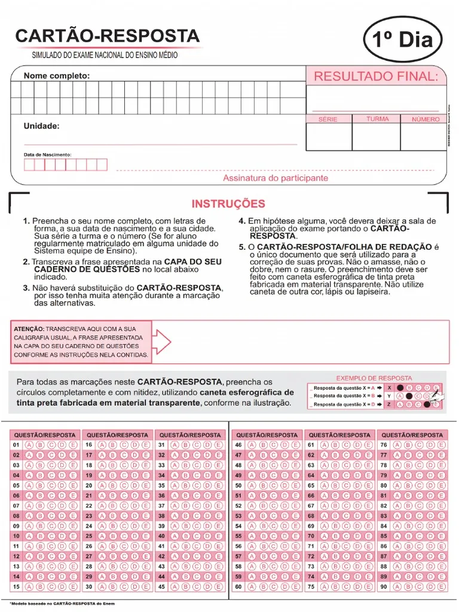

LEITURA E CONFERÊNCIA
Um estudante.
Dois cartões.
Fotografe, confira as respostas e salve a correção.
2 Leia o cartão
Aproxime a câmera da grade
Deixe as 90 questões visíveis, sem sombras ou dobras. Use o mesmo modelo do cartão enviado.
Onde tocar no cartão?
Toque no centro das bolinhas extremas nesta ordem: A da primeira questão, E da primeira questão da última coluna, E da última questão, A da última questão da primeira coluna. No 1º dia: A1, E76, E90, A15. No 2º: A91, E166, E180, A105.

REVISE ANTES DE SALVAR
Respostas reconhecidas
Confira todas as respostas com o cartão. As destacadas precisam de atenção. “Branco” e “Dupla” contam como erro.
ACERTOS POR ÁREA
Resultados da turma
Resultados parciais ficam identificados até a leitura dos dois cartões.
| Estudante | Situação | Linguagens | Humanas | Natureza | Matemática | Total |
|---|
O PDF inclui os estudantes da turma selecionada, a situação de cada cartão e os acertos por área. Não é uma nota calculada pela TRI.
TUDO NO SEU NAVEGADOR
Prepare a correção
Importe os estudantes uma vez e confira o gabarito.
Lista do 9º ano
Selecione o arquivo estudantes-9ano-IMPORTAR.json entregue com o sistema. Os nomes não são enviados para um servidor.
Continuar uma correção
Restaure uma cópia de segurança baixada na aba Resultados.
As fotos são descartadas ao salvar. Nomes, respostas e resultados ficam no armazenamento local deste navegador. Limpar os dados do navegador ou usar navegação privada pode apagar seu trabalho. Baixe uma cópia de segurança ao terminar cada sessão.
Gabarito de referência
Transcrito das duas fotos fornecidas. As questões 1 a 5 variam conforme o idioma.